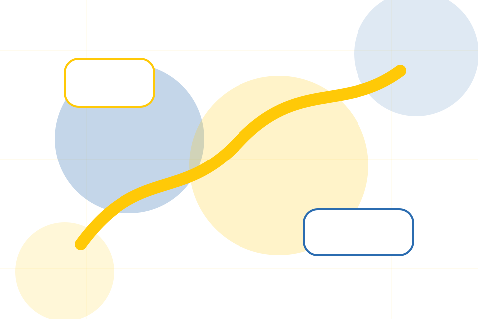
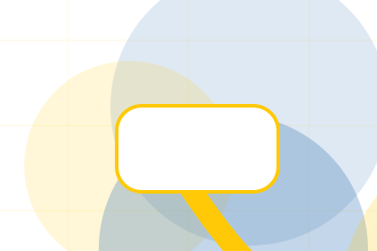
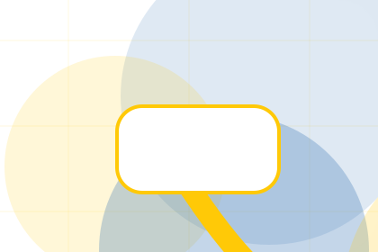
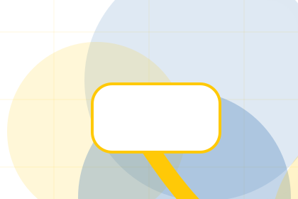
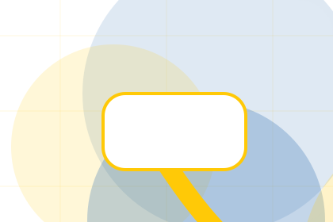
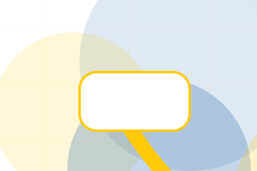
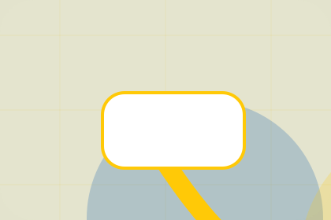

Mission / 01
Mission by Good
Mission shaped for nonprofit, charity & social impact decisions.
Mission opens as a clear nonprofit decision hub: what Good offers, who it helps, why it matters, and which route to take first.
The first screen combines positioning, proof, primary action, and fast internal navigation, so people can act immediately or compare the rest of the mission route with context.
Nonprofit scopeCompare optionsRequest advice
Yellow impact hero
Choose an impact route
Select the closest route and Good keeps the next step, proof, and follow-up expectation aligned with trust and contribution.

Mission / 03
Vision inside mission
Vision adds professional context to the mission route, using the transparent donation impact flow structure to support trust and contribution before visitors choose a next step.
Good uses impact story cards and focused copy to make the decision easier to scan, aligning the section with trust and contribution rather than filling space.
Explore MissionContext
Vision gives the page a specific angle instead of repeating the navigation label.
Judgment
The impact story cards show what to compare, what to avoid, and what matters most for nonprofit, charity & social impact visitors.

Direction
The final cue points to a useful internal route so the section keeps the journey moving.
Mission / 04
Values inside mission
Values adds professional context to the mission route, using the transparent donation impact flow structure to support trust and contribution before visitors choose a next step.
Good uses impact story cards and focused copy to make the decision easier to scan, aligning the section with trust and contribution rather than filling space.
Explore MissionValues gives the page a specific angle instead of repeating the navigation label.
The impact story cards show what to compare, what to avoid, and what matters most for nonprofit, charity & social impact visitors.
The final cue points to a useful internal route so the section keeps the journey moving.
Mission / 05
Change inside mission
Change adds professional context to the mission route, using the transparent donation impact flow structure to support trust and contribution before visitors choose a next step.
Good uses impact story cards and focused copy to make the decision easier to scan, aligning the section with trust and contribution rather than filling space.
Explore Mission- 01
Context
Change gives the page a specific angle instead of repeating the navigation label.
- 02
Judgment
The impact story cards show what to compare, what to avoid, and what matters most for nonprofit, charity & social impact visitors.
- 03
Direction
The final cue points to a useful internal route so the section keeps the journey moving.
Mission / 06
Goals inside mission
Goals adds professional context to the mission route, using the transparent donation impact flow structure to support trust and contribution before visitors choose a next step.
Good uses impact story cards and focused copy to make the decision easier to scan, aligning the section with trust and contribution rather than filling space.
Explore MissionGood structures goals around context, judgment, and a clear next route so visitors can compare the block quickly before they donate today.
Donate TodayMission / 07
Principles inside mission
Principles adds professional context to the mission route, using the transparent donation impact flow structure to support trust and contribution before visitors choose a next step.
Good uses impact story cards and focused copy to make the decision easier to scan, aligning the section with trust and contribution rather than filling space.
Explore Mission

Context
Principles gives the page a specific angle instead of repeating the navigation label.
Mission / 08
Impact visitors can see
Impact shows what changes after the work: clearer decisions, visible progress, and proof points that connect the offer to real outcomes.
The layout connects before-and-after thinking with measured outcomes, making the result easy to scan without promising what the business cannot guarantee.
Explore MissionBefore
The uncertainty, delay, or missed opportunity visitors bring into impact.

After
The clearer, safer, or more valuable state Good is designed to support.

Proof
The visible cue that connects impact to a believable decision, not a loose claim.
Mission / 09
Compare service routes
Support explains the practical scope, best-fit situations, and expected outcome so nonprofit visitors can compare options without decoding jargon.
The section keeps the offer concrete: what is included, who it is best for, what decision it supports, and which linked route gives the deeper detail.
Open ContactWho should use support and when it belongs in the mission journey.
The practical benefit visitors should expect after choosing this route.
Where to compare details, pricing, support, or contact options before committing.
Mission / 10
Donate Today
Good closes the mission route with a clear action, a quick reminder of the value, and a low-friction way to donate today.
Visitors who are ready can use the primary action. Visitors who are still comparing can scan the section links, proof, and support routes before they donate today.
Donate TodayThe final block keeps the choice simple: act now, compare one more proof route, or send enough detail for a focused response.
Donate Todaytrust and contribution
Donate Today
A donor site with bold yellow impact modules, transparent metrics, story cards, and donation selector. Mission ends with a direct path to donate today, plus enough context for visitors who still need to compare.

Donate TodayImportant notes before you act
Donation use statements must match governance records, reporting, and local fundraising rules.